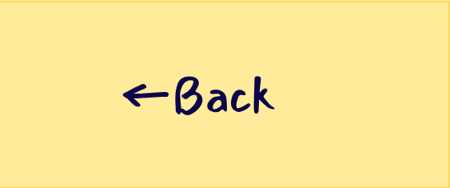

Portal 2 stands will always be one of my favorite games and part of that comes down to its incredible level designs. Being at its heart a puzzle game, Portal 2 is tasked with the unique challenge of creating a puzzle game built entirely around being able to teleport across the map. Creating challenges that are unique and interesting but not convoluted. Portal 2 does this by limiting mechanics.
While annoying in some games, the slow rollout of new skills and abilities in a game like the Portal series gives the player plenty of time to play around with one mechanic before jumping to the next one. The portal gun is a good early example of this, with the player being put in situations where the Portal Gun is out of their hands before actually being able to use it.

The different functions of wall types also create limitations for the player to put portals, creating a clear path towards figuring out how you’re supposed to solve each puzzle. Incorporating things like using your momentum to jump across gaps, using a portal to grab an object from an out of reach area or using obstacles like the hilarious yet threatening turrets to provide areas you’re not allowed to reach.

Portal 2 uses things like this as an invisible hand to guide the user towards the place where they want you to go. You can see this type of design in games like Metroid Dread which carefully placed its rooms so that once you get a new movement upgrade a place where you can access a new area with that movement should be directly ahead. Using limitations as guidelines is a great tool for level design and while not one I have been able to implement into my games as of yet it’s something you should always consider.
